The Big Easy Lawn Care Blog for New Orleans Yards
At Big Easy Lawn Care, we write the answers New Orleans homeowners ask us for most, with advice built around our heat, humidity, shade, and heavy rain. Start with the newest guide below, or browse by topic to find what your lawn needs this season.
What Is Our Newest Lawn Care Guide for New Orleans Yards?
Our newest New Orleans lawn care guide answers a question we hear constantly: can grass grow in full shade under a live oak? The short answer is no. The guide shows how to count the hours of direct sun, spot shade-stressed grass, bring light back to the area, and know when to stop fighting the shade.

Can You Grow Grass in 100% Shade in New Orleans, LA?
Grass cannot grow in 100% shade. Learn how to count the hours of direct sun, read the signs of shade stress, bring light back under a live oak, and decide when turf is the wrong answer for that spot.
Read the GuideWhat Lawn Care Questions Do New Orleans Homeowners Ask?
New Orleans homeowners ask us about the same handful of things every year: when to mow, which grass to plant, how to water, how to handle pests and fungus, and how to get a yard ready for hurricane season. Every guide below answers one of those questions for local conditions.

What Not to Do With Fresh Sod in New Orleans, LA?
Read more
Can I Just Throw Grass Seed on Bare Spots in New Orleans, LA?
Read more
How Much Will 25 Bags of Mulch Cover in New Orleans, LA?
Read more
Common Lawn Pests and How to Treat Them in New Orleans, LA
Read more
How to Prepare Your Yard for Hurricane Season in New Orleans, LA
Read more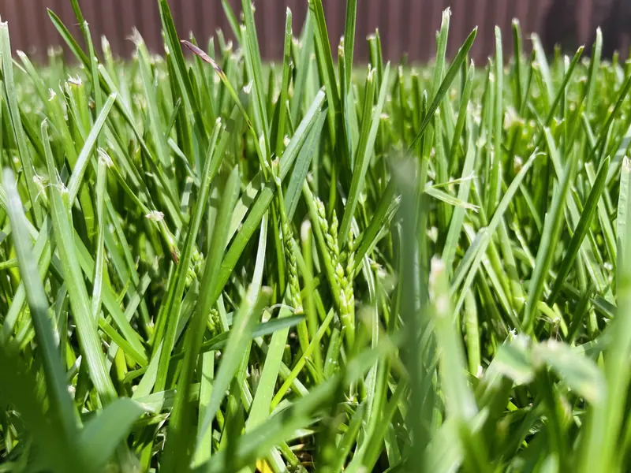
Choosing the Right Grass Type for Your Yard in New Orleans, LA
Read more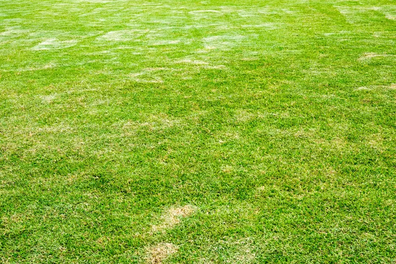
How to Protect Your Lawn From Summer Heat Stress in New Orleans, LA
Read more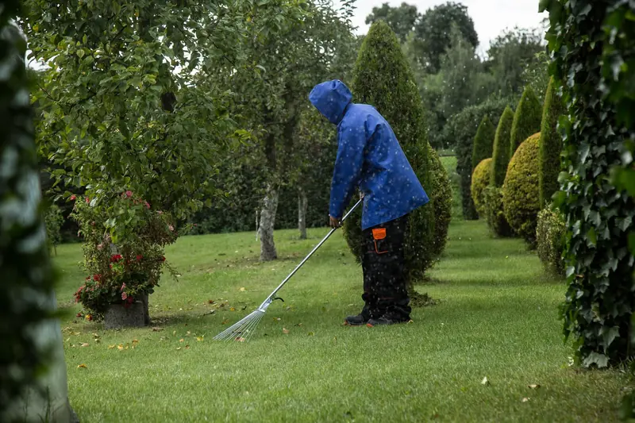
Lawn Aeration and Dethatching: Reviving Your Grass for Lushness in New Orleans, LA
Read more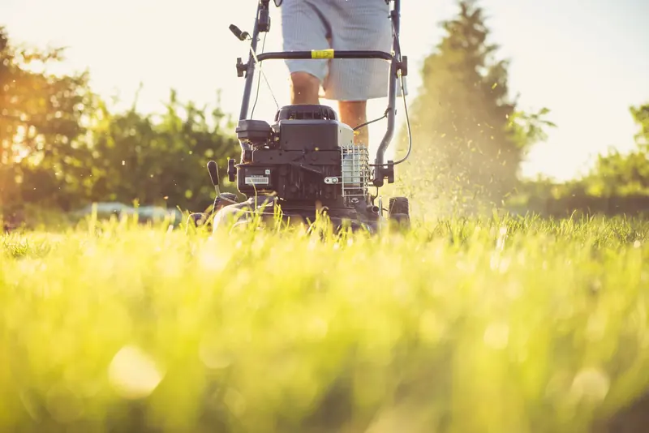
When to Cut Your Grass in New Orleans, LA
Read more
Practical Tips for Efficient Irrigation: Watering Your Garden and Lawn in New Orleans, LA
Read more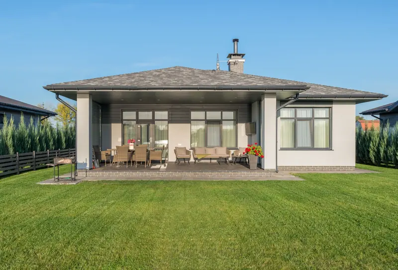
What Season Is Best for Lawn Care in New Orleans?
Read more
Common Lawn Trimming Mistakes and How to Avoid Them
Read more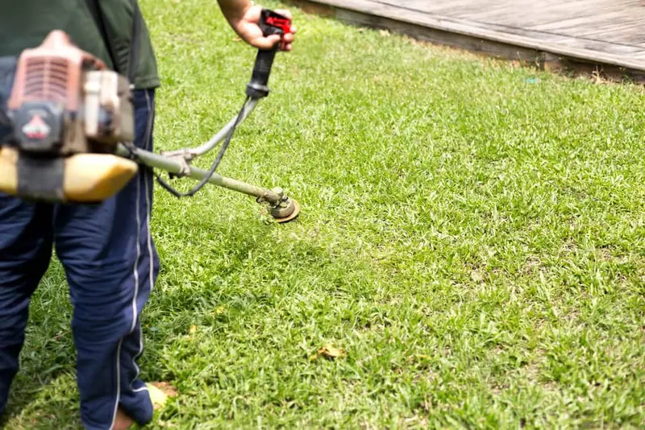
How Often Should You Cut Weeds for Optimal Lawn Health?
Read moreTop Signs Your Yard Needs Professional Landscape Restoration
Read more
Understanding Fertilizers: Choosing the Right Nutrients for Your Garden
Read more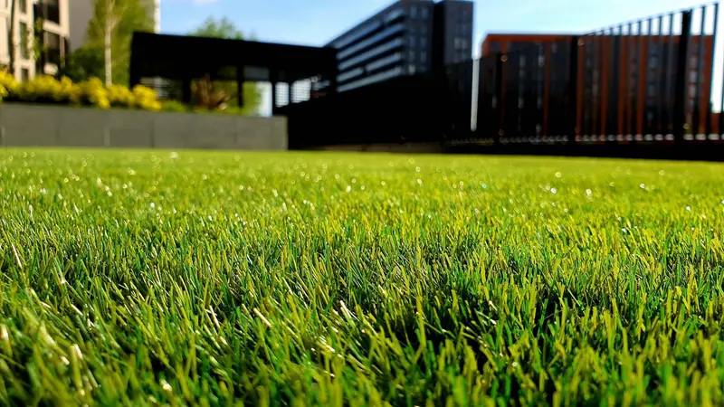
Practical Steps for Dealing with Lawn Diseases and Fungus
Read more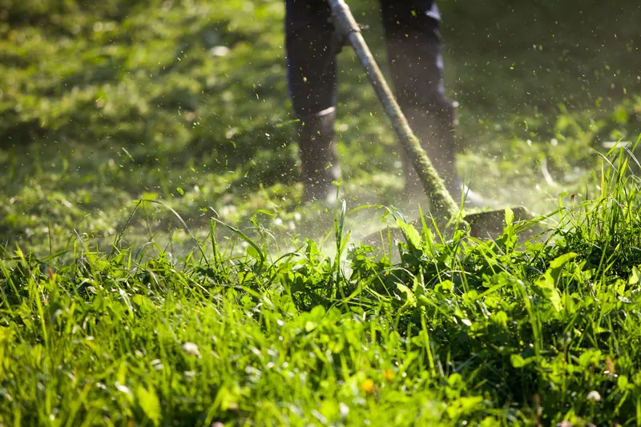
Creating a Low-Maintenance Garden: Plants and Designs for Easy Care
Read more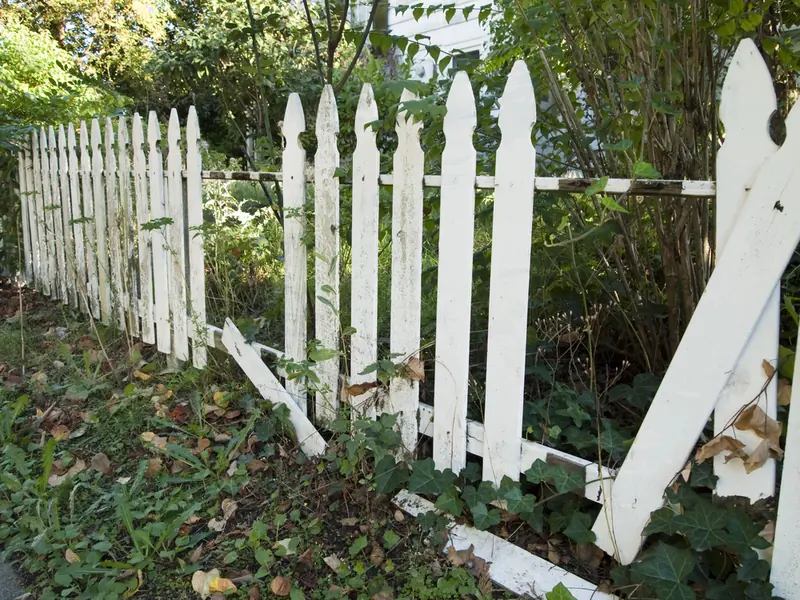
Lawn Renovation: Rescuing an Overgrown or Neglected Yard
Read more
Gardening for Pollinators: How to Welcome Bees, Butterflies, and Birds to Your Yard
Read more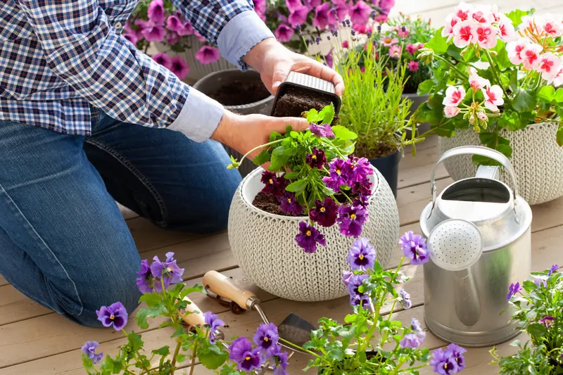
Choosing the Right Plants for Your Container Garden
Read more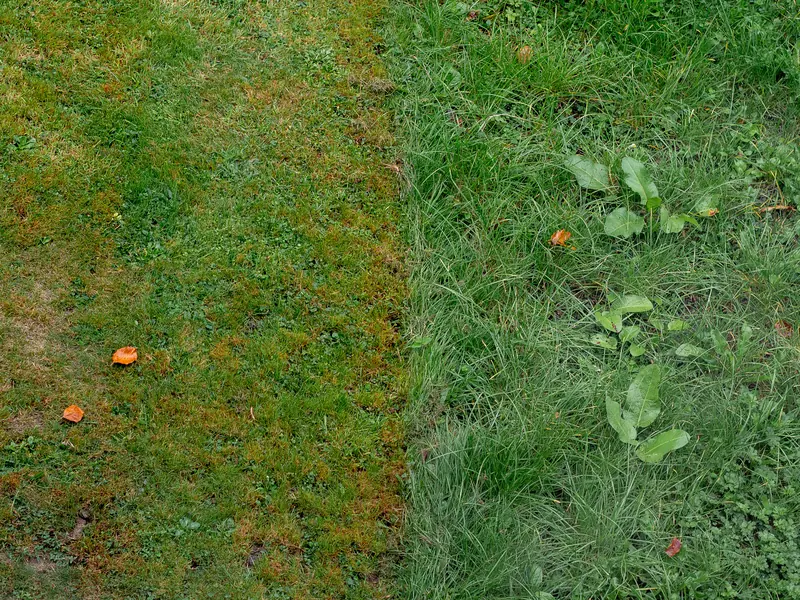
How to Keep Your Garden and Lawn Weed-Free
Read more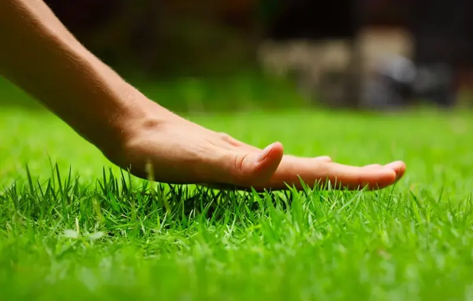
Discover the Optimal Seasons for Lawn Care in New Orleans
Read more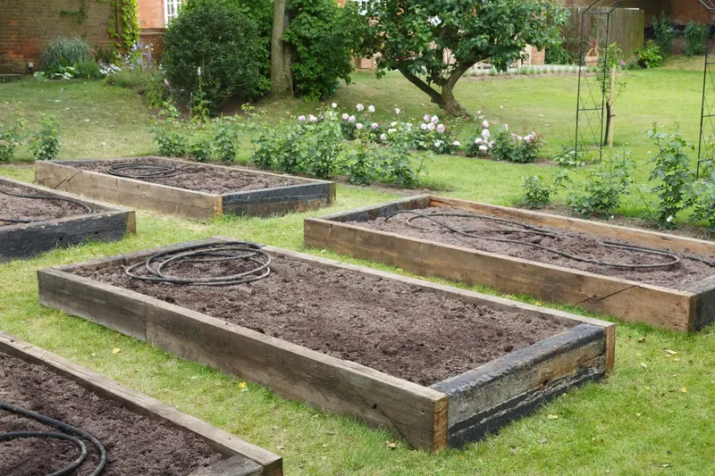
The Benefits of Overseeding in Fall: A Guide to a Greener Lawn
Read more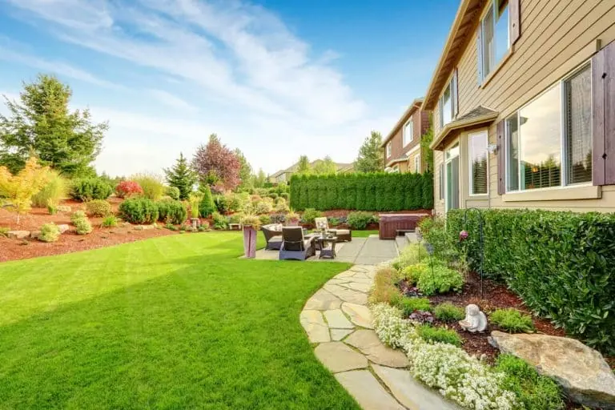
Budget-Friendly Lawn Care Hacks for DIY Enthusiasts
Read more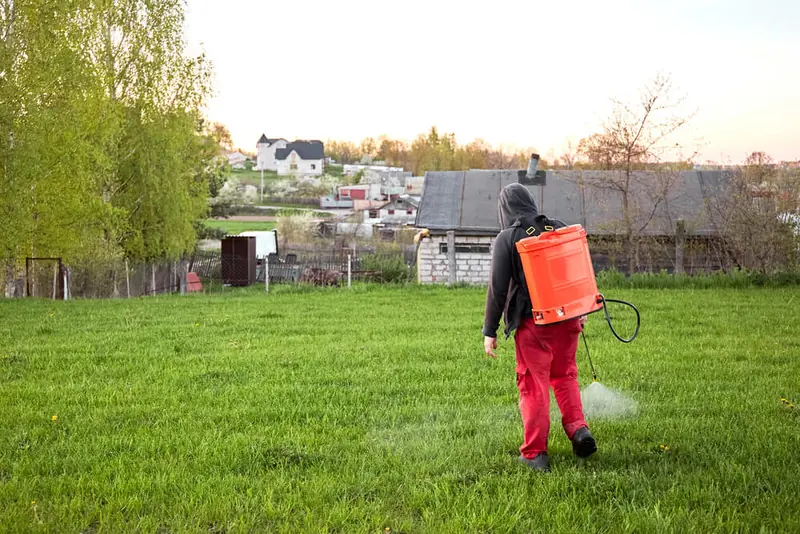
The Role of Fertilization in Seasonal Lawn Care: Tips and Timing
Read more
Seasonal Lawn Care Calendar: What to Do Each Month for a Beautiful Lawn
Read more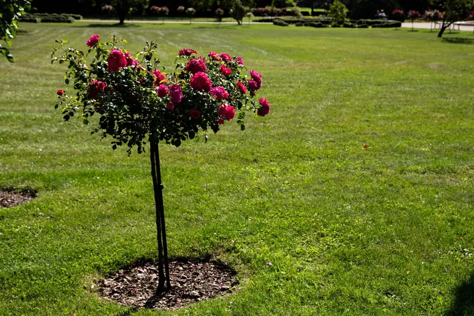
How Do You Keep Grass Alive In The Winter?
Read more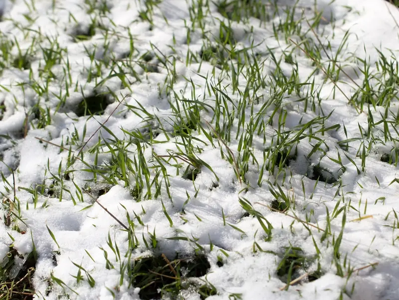
6 Lawn Care Tips for Maintaining a Healthy Yard During Winter
Read more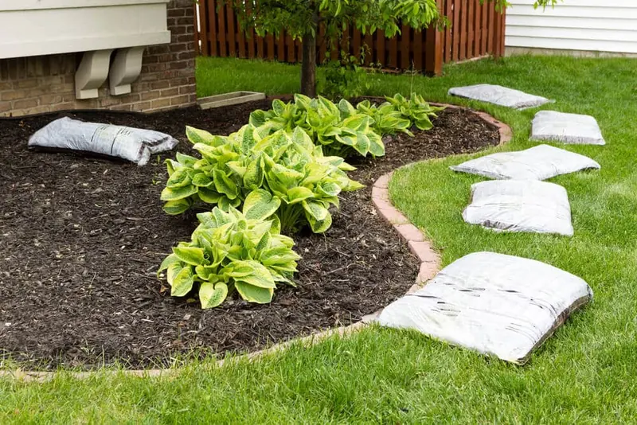
Revamp Your Yard: 6 Landscaping Ideas for Winter
Read more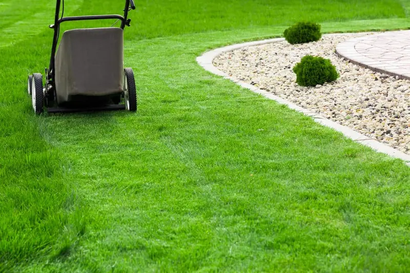
Fall Lawn Care: 6 Essential Maintenance Tips
Read more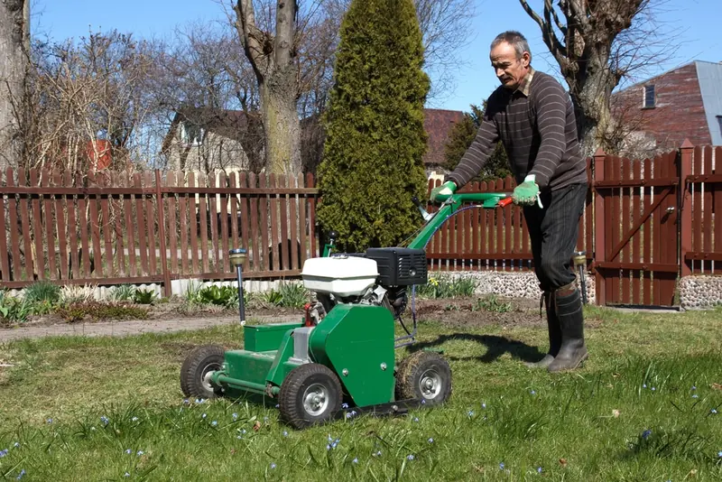
The Importance of Aeration and Overseeding in Lawn Care
Read more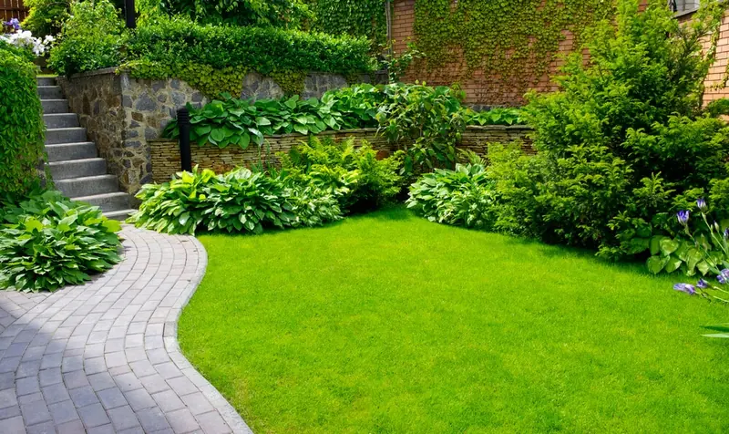
Eco-Friendly Sustainable Lawn Care
Read more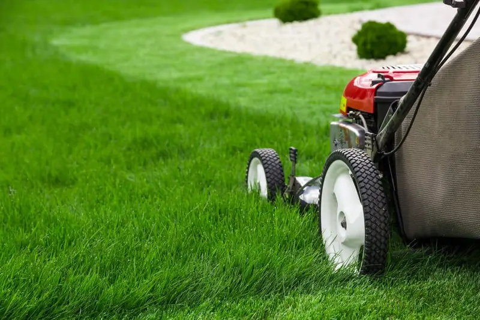
10 Lawn Care Tips for Your Yard This Spring
Read moreWhy Do New Orleans Lawns Need Local Lawn Care Advice?
New Orleans lawns need local lawn care advice because most national guides assume cool-season grass, mild summers, and steady rain. Here, warm-season turf like St. Augustine and Bermuda grows fast through a long, humid summer, and a single storm can soak the yard for days, so timing that ignores that rarely works.
That is why every guide on this blog is written around local conditions: shade from live oaks, heavy Gulf rains, heat stress in late summer, and a growing season that starts in March.

Where Can You Get Hands-On Lawn Care Help in New Orleans?
When a guide shows the job is bigger than a weekend, our New Orleans crews can take it from there. See the full list of lawn care and landscaping services, browse photos of the work, learn about our team, or request a free estimate for your property today.


Your Lawn's Best Friend in the Big Easy
Join our satisfied and happy customers. Get your free lawn care assessment today.